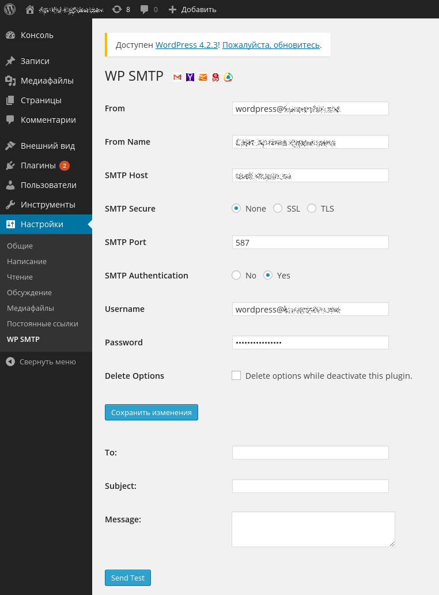

Не так давно возникла задача перенести блог на Wordpress на другой домен. Имелись только резервная копия базы данных и файлов. Задача тривиальная, за исключением нескольких моментов: 1. в базе данных имеется много ссылок на старый домен, 2. перенос осуществлялся с Apache на nginx + php-fpm, поэтому нужно было правильно настроить веб-сервер, 3. на старом хостинге отправлять письма можно было без аутентификации, на новом - только с аутентификацией.
На всякий случай, пройдусь полностью по всей процедуре восстановления.
Установим пакеты, необходимые для работы Wordpress:
# apt-get install nginx mysql-server php5-fpm php5-gd php5-mysql libphp-phpmailer
Возможно понадобится что-то ещё, но мне хватило этого.
Подключимся к только что установленному серверу MySQL:
# mysql -uroot -p mysql
Создадим базу данных blog, в которую будем восстанавливать резервную копию:
mysql> CREATE DATABASE blog CHARSET utf8;
Восстановим резервную копию:
mysql> use blog mysql> source backup.sql
Теперь создадим пользователя, от имени которого Wordpress будет работать с базой данных:
mysql> use mysql
mysql> INSERT INTO user(user, password, host) VALUES('blog', PASSWORD('blog_password'), 'localhost');
mysql> FLUSH PRIVILEGES;
mysql> GRANT ALL ON blog.* TO blog@localhost;
mysql> FLUSH PRIVILEGES;
Теперь исправим содержимое базы данных так, чтобы все ссылки указывали на новый домен (domain.old - старый домен, domain.new - новый домен):
mysql> UPDATE wp_options SET option_value = REPLACE(option_value, 'domain.old', 'domain.new') WHERE option_name IN ('home', 'siteurl');
mysql> UPDATE wp_posts SET post_content = REPLACE(post_content, 'http://domain.old', 'http://domain.new');
mysql> UPDATE wp_posts SET guid = REPLACE(guid, 'http://domain.old', 'http://domain.new');
mysql> UPDATE wp_posts SET pinged = REPLACE(pinged, 'domain.old', 'domain.new');
mysql> UPDATE wp_postmeta SET meta_value = REPLACE(meta_value, 'domain.old', 'domain.new');
mysql> UPDATE wp_comments SET comment_author_url = REPLACE(comment_author_url, 'domain.old', 'domain.new');
Выйдем из клиента mysql:
mysql> \q
Создадим новый или отредактируем имеющийся файл /etc/php5/fpm/pool.d/default.conf:
[default] # Блог будет работать с правами пользователя www-data и группы www-data user = www-data group = www-data # Этот пул php5-fpm будет ждать соединений на указанном UNIX-сокете listen = /var/run/default.sock # Права доступа к UNIX-сокету listen.owner = www-data listen.group = www-data listen.mode = 0660 # Динамическое количество процессов в пуле pm = dynamic # Максимальное количество процессов в пуле - 6 pm.max_children = 6 # При запуске php5-fpm создаётся 2 процесса в пуле pm.start_servers = 2 # Если все процессы заняты, значит ожидается увеличение нагрузки, нужно создать ещё один процесс pm.min_spare_servers = 1 # Если свободно больше 4 процессов, завершаем лишние pm.max_spare_servers = 4 # Журнал запросов, обработанных php5-fpm access.log = /var/log/php5-fpm.access.log # Журнал для отладки, сюда попадают сообщения об ошибках php_value[log_errors] = On php_value[error_log] = /var/log/php5-fpm.error.log # Отключаем возможность использовать URL'ы вида file.php/section/page/1 php_value[cgi.fix_pathinfo] = 0 # Страница может генерироваться максимум 30 секунд php_value[max_execution_time] = 30 # Максимальный объём POST-запроса - 16 мегабайт php_value[post_max_size] = 16M # Максимальный размер вложений в POST-запросе - 8 мегабайт php_value[upload_max_filesize] = 8M # Выставляем местный часовой пояс php_value[date.timezone] = Asia/Yekaterinburg
Теперь запустим php5-fpm:
# systemctl start php5-fpm.service
После распаковки файлов из резервной копии нужно положить их туда, где с ними будут работать nginx и php5-fpm (в нашем случае это путь /home/www01/domain.new) и выставить правильные права доступа:
# cd /home/www01/domain.new/
# chown www-data:www-data -R *
# find . -type d -exec chmod u=rwx,g=rx,o= \{\} \;
# find . -type f -exec chmod u=rw,g=r,o= \{\} \;
Пропишем в файл /etc/nginx/sites-available/default такие настройки:
server {
listen 80;
server_name domain.new;
root /home/www01/domain.new/;
index index.php;
location / {
try_files $uri $uri/ /index.php?$args;
}
location ~ \.php$ {
include fastcgi.conf;
fastcgi_pass unix:/var/run/default.sock;
}
}
Включим использование этого файла веб-сервером:
# cd /etc/nginx/sites-enabled/ # ln /etc/nginx/sites-available/default .
И запустим сам веб-сервер:
# systemctl nginx start
Если шаблоны для сайта были разработаны или доработаны специально, нужно поискать и заменить в шаблонах возможно имеющиеся в них ссылки на старый домен. Поиск можно осуществить, например, так:
# cd /home/www/domain.new/ # grep -R domain.old *
Будут выведены имена всех файлов, в которых встречается старый домен и строчки, в которых этот домен встретился. Далее нужно последовательно открыть каждый файл и исправить в нём домен на новый.
По идее, уже сейчас сайт должен работать правильно. Однако, стоит открыть сайт в веб-браузере с активированной функцией отладки и посмотреть, не происходит ли обращений по старому адресу. Если такие обращения происходят, то скорее всего нужно исправить настройки используемой темы или какого-либо плагина Wordpress.
Может случиться так, что старый домен проплачен и будет работать ещё некоторое время. Чтобы не терять посетителей, пришедших на старый домен, можно перенастроить его DNS-серверы так, чтобы они указывали на новый хостинг. В таком случае в конфигурацию nginx можно внести небольшое дополнение, которое будет перенаправлять посетителей со старого адреса на новый:
server {
listen 80;
server_name domain.old;
return 301 http://domain.new$request_uri;
}
Можно ещё немного подкорректировать этот фрагмент конфигурации. У многих интернет-пользователей старой закалки сложился стереотип, что имя любого сайта обязано начинаться с www. Чтобы не терять и таких посетителей, поменяем предыдущий фрагмент файла конфигурации следующим образом:
server {
listen 80;
server_name domain.old www.domain.old www.domain.new;
return 301 http://domain.new$request_uri;
}
Чтобы новые настройки вступили в силу, перезагрузим веб-сервер:
# systemctl nginx reload
Как я уже говорил, на старом хостинге почта отправлялась без аутентификации, а на новом требуется аутентификация. Как вариант, на новом хостинге вообще может быть не настроен почтовый сервер. В таком случае всё-же можно отправлять почту, но для этого придётся аутентифицироваться на каком-либо стороннем сервере (gmail.com, yandex.ru, mail.ru и т.п.).
Для решения этой проблемы можно воспользоваться плагином для Wordpress, который называется WP SMTP. Ставим плагин и настраиваем почтовый ящик, который будет использоваться для отправки уведомлений:
На этом поставленные цели достигнуты, задача решена.